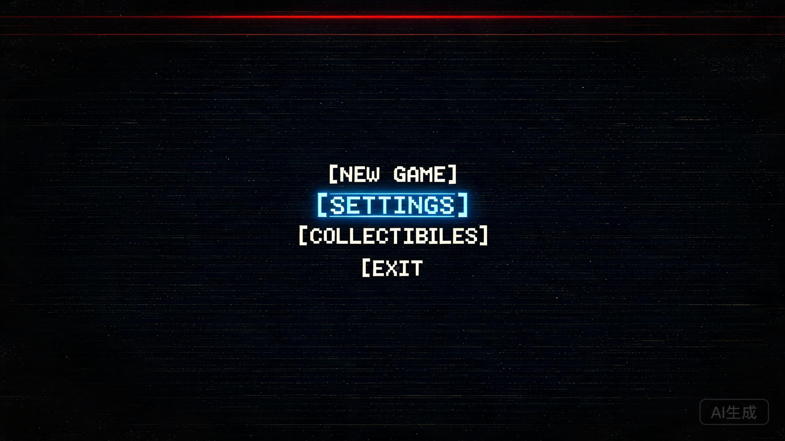
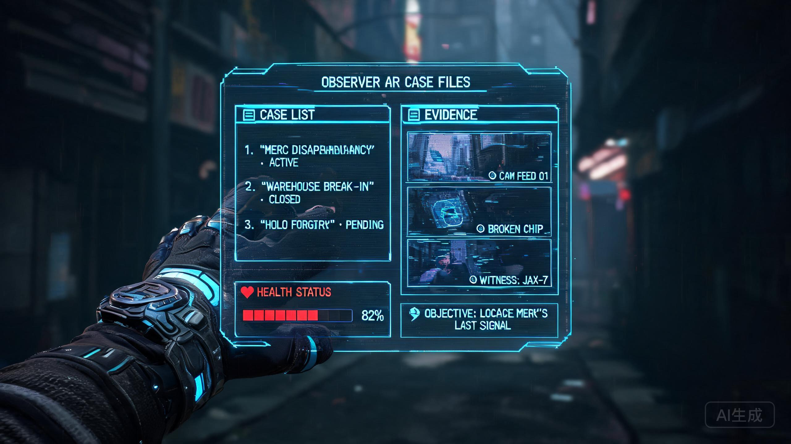
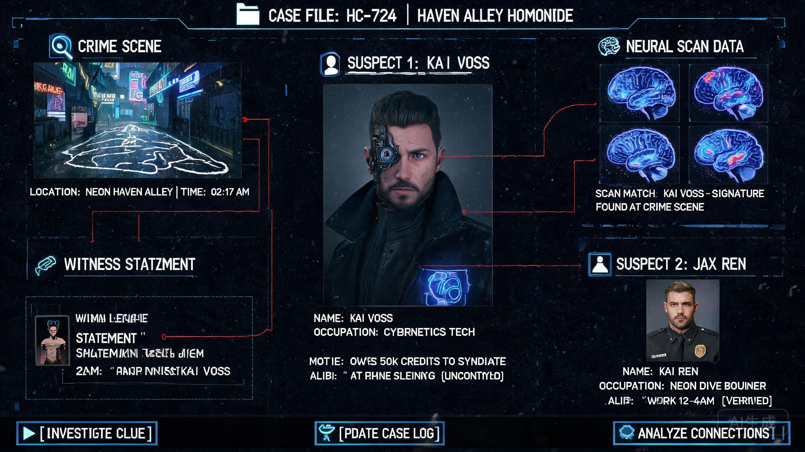
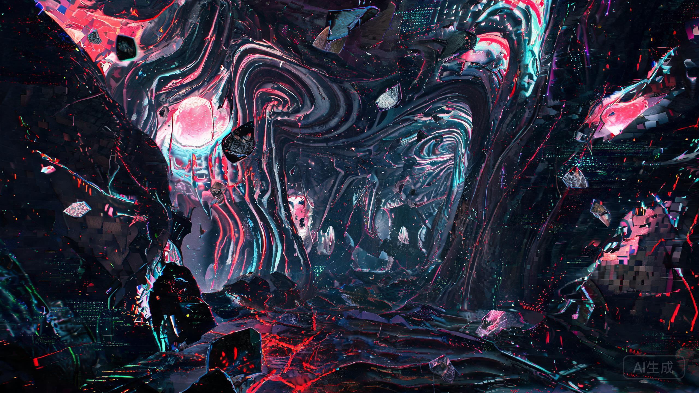
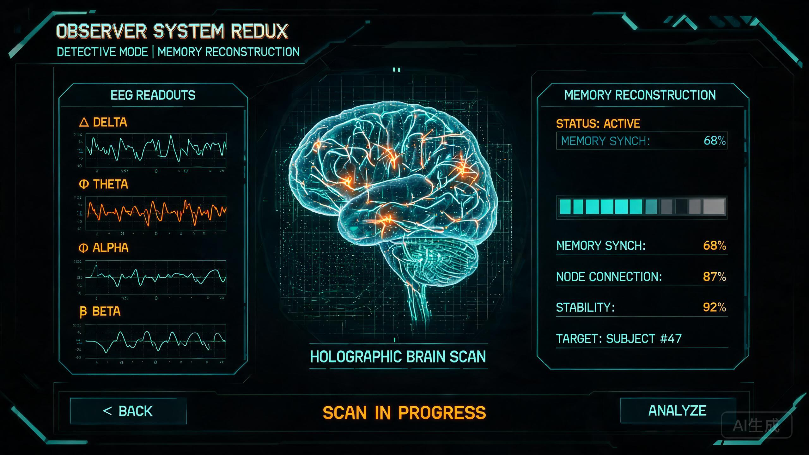
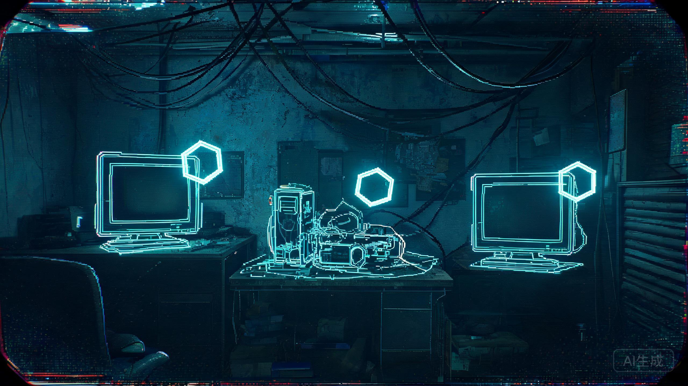
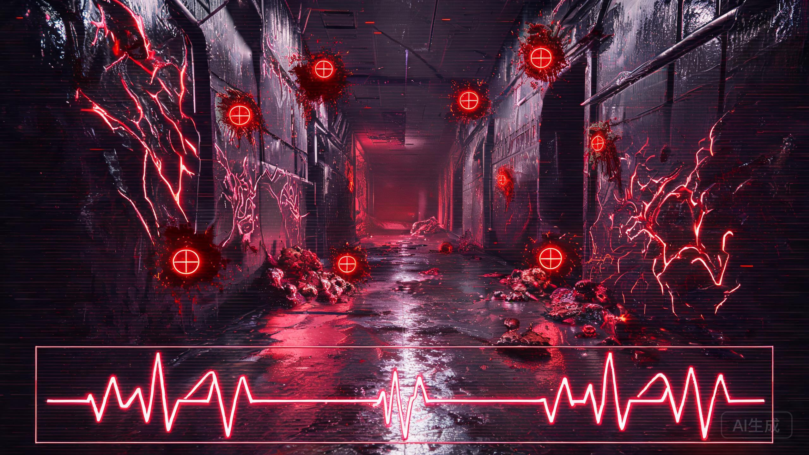
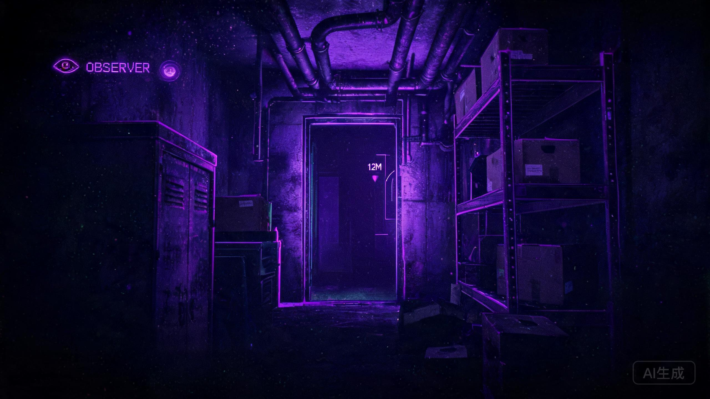
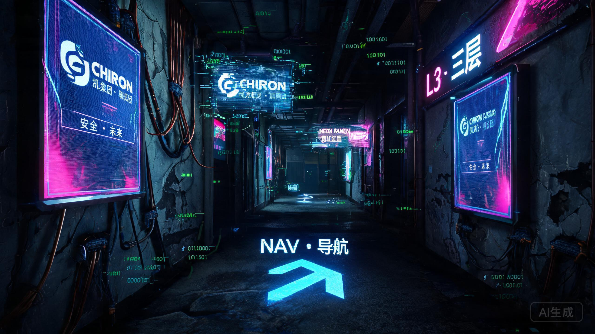
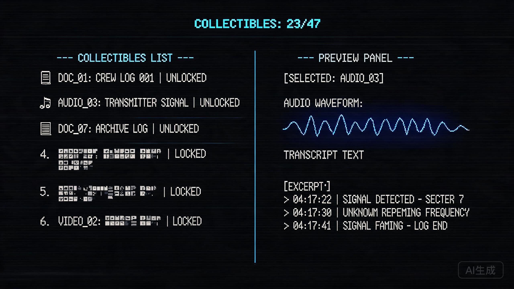

游戏概述 GAME OVERVIEW
Observer 是一款第一人称赛博朋克恐怖侦探游戏，核心玩法围绕环境探索、线索搜集、神经入侵审讯展开。与传统 RPG 不同，它没有商店、天赋树、成就或图鉴系统——UI 设计完全服务于叙事沉浸与恐怖氛围。
核心玩法 GAMEPLAY
世界观设定 SETTING
设计哲学 DESIGN PHILOSOPHY
Observer 的 UI 设计遵循"消失即存在"的悖论——通过最大限度减少界面元素的存在感，反而强化了玩家对游戏世界的沉浸。这是 diegetic UI 设计的极致实践。
零常驻 HUD
画面四周没有任何常驻 UI 元素——没有血条、没有小地图、没有任务追踪。所有信息仅在需要时通过 AR overlay 短暂浮现，最大限度保持视野纯净。
AR 全息叠加
所有界面信息都以世界内 AR 投影呈现——案件日志、互动物品高亮、NPC 信息标签直接投射在环境中，仿佛角色通过神经植入体"看到"的数据层。
三重视觉模式
电磁视觉（蓝）扫描电子设备，生物视觉（红）检测有机生命，夜视（紫）在黑暗中视物。三种模式不仅改变画面滤镜，更重构了玩家与世界的交互方式。
拖拽式互动
与物品互动需鼠标拖拽开门、移动物体，而非简单的按键交互。这种"费力感"强化了第一人称的物理存在感，参考 Alien: Isolation 的机械互动。
神经入侵界面
侵入他人大脑时，UI 彻底崩解——画面扭曲、色彩偏移、现实与幻觉边界消融。此时的"界面"就是疯狂本身，形式与内容达成完美统一。
霓虹即信息
环境中的霓虹灯、全息广告、AR 标识不仅是装饰，更是世界观叙事的载体。Chiron 公司的产品广告、反乌托邦标语无处不在，UI 与环境设计无缝融合。
界面模块分析 INTERFACE ANALYSIS
由于 Observer 是线性叙事恐怖冒险而非 RPG，它没有传统意义上的商店、天赋、成就或图鉴系统。以下分析聚焦于游戏实际拥有的核心界面模块，并与 Fire Roach Killer 的设计需求进行对照。
① 主界面 MAIN MENU
布局方案 LAYOUT
极简的终端式标题画面——纯黑背景上仅有四个选项：新游戏 / 设定 / 可收集物品 / 退出。没有华丽的背景动画，没有角色展示，只有冰冷的等宽字体与细微的 CRT 扫描线效果。
设计要点 KEY FEATURES

② 战斗 HUD / 探索界面 EXPLORATION HUD
布局方案 LAYOUT
Observer 的 HUD 是游戏史上最极简的设计之一——画面四周完全没有任何常驻元素。玩家通过第一人称视角直接观察世界，只有在交互或扫描时，AR overlay 才会短暂浮现。
设计要点 KEY FEATURES
③ 案件日志 / 数据面板 CASE LOG / DATA PANEL
布局方案 LAYOUT
按鼠标滚轮呼出 AR 控制面板——这是游戏中唯一的"菜单"界面。面板以全息投影形式浮现在画面中央，不暂停游戏，背景仍可见。包含案件档案、目标列表、健康状态。
设计要点 KEY FEATURES


④ 神经入侵 / 审讯界面 NEURAL INTERROGATION
布局方案 LAYOUT
Observer 最核心的 UI 创新——当 Daniel 使用"食梦者"设备侵入他人大脑时，传统 UI 彻底消失。玩家进入被入侵者的精神世界，这里的一切都是扭曲的、非欧几里得的、充满象征意义的。
设计要点 KEY FEATURES


⑤ 增强视觉模式系统 VISION MODES
三种视觉模式 VISION MODES
Observer 最具辨识度的 UI/UX 设计——玩家可随时切换三种增强视觉模式，每种模式彻底改变画面外观并高亮不同类型的可互动物品。这是游戏最核心的"能力系统"。
设计要点 KEY FEATURES



⑥ 暂停 / 设置菜单 PAUSE / SETTINGS
布局方案 LAYOUT
ESC 呼出的暂停菜单同样遵循极简终端风格——游戏画面不冻结（保持背景可见），菜单以半透明黑色遮罩 + 等宽字体列表呈现。选项包括：继续 / 设定 / 返回主菜单 / 退出游戏。
设计要点 KEY FEATURES
⑦ 环境 AR 叠加层 ENVIRONMENTAL AR OVERLAYS
布局方案 LAYOUT
Observer 最独特的 UI 元素——环境中的 AR 全息广告与信息标识。克拉科夫贫民窟的每个角落都充斥着 Chiron 公司的全息投影、反乌托邦标语、霓虹招牌。这些不仅是装饰，更是叙事工具。
设计要点 KEY FEATURES

⑧ 可收集物品界面 COLLECTIBLES
布局方案 LAYOUT
Observer 中唯一接近"图鉴"的系统——从主菜单进入的可收集物品面板。收集品包括案件文档、录音、视频片段、世界观资料。以终端式列表呈现，每个条目包含标题、类型图标、解锁状态。
设计要点 KEY FEATURES

⑨ 不存在的系统 ABSENT SYSTEMS
Observer 没有这些 N/A
作为线性叙事恐怖游戏，Observer 主动摒弃了传统 RPG 的诸多系统。这种"减法设计"本身就是其 UI 哲学的核心——越少越好，直到只剩下恐惧。
减法设计的启示 LESSONS
界面模块对照矩阵 COMPARISON MATRIX
| 界面模块 | Observer 实现 | Fire Roach Killer 可借鉴 | 核心启示 |
|---|---|---|---|
| ① 主界面 | 极简终端列表（4 项） | PDA 终端式极简主菜单 | 少即是多，等宽字体 + 霓虹选中态 |
| ② 战斗 HUD | 零常驻 HUD，纯 AR overlay | 隐藏常驻元素，受伤时边缘呼吸 | 视野纯净度 > 信息密度 |
| ③ 案件日志 | 不暂停的 AR 全息面板 | 图鉴/成就用 AR 面板叠加 | 菜单不暂停 = 紧张感不中断 |
| ④ 神经入侵 | UI 崩解 = 疯狂可视化 | 加载界面/特殊关卡的故障美学 | 形式与内容统一 |
| ⑤ 视觉模式 | 3 种画面滤镜切换 | 热成像/电磁模式高亮目标 | 画面滤镜替代 UI 标识 |
| ⑥ 暂停菜单 | 不冻结 + 暗化遮罩 | 暂停不冻结，保持背景可见 | 沉浸感优先于功能性 |
| ⑦ 环境 AR | 全息广告 = 叙事工具 | 场景中的战术投影/击杀计数 | 装饰即玩法，环境即 UI |
| ⑧ 收集品 | 终端式列表 + 波形图 | 实验记录风格的敌人档案 | 信息呈现 = 世界观延伸 |
| ⑨ 商店 | 不存在 | 可保留但改为终端式补给站 | 系统存在需有叙事理由 |
| ⑩ 天赋/升级 | 不存在 | 可保留但简化为固定模块 | 减法设计增强专注度 |
视觉系统 VISUAL SYSTEM
Observer 的视觉系统以高对比霓虹 + 绝对黑暗为基底，通过三种视觉模式的色彩分级，实现一世界三面貌的沉浸体验。
色彩系统 COLOR SYSTEM
质感与特效 TEXTURE
字体系统 TYPOGRAPHY
声音设计 AUDIO
设计令牌 DESIGN TOKENS
提取 Observer 的核心设计语言，形成可直接应用于 Fire Roach Killer 的设计令牌。
CSS 变量 TOKENS
:root{
/* 背景 */
--bg:#080a0f; /* 深蓝黑背景 */
--panel:#11141d; /* 面板底色 */
--line:#1e2333; /* 边框线 */
/* 文字 */
--ink:#d8dce6; /* 主文字 */
--ink-dim:#6b7285; /* 次要文字 */
/* 霓虹色 */
--neon-red:#ff2a6d; /* 警告/生物 */
--neon-blue:#05d9e8; /* 科技/选中 */
--neon-violet:#bd00ff;/* 神秘/夜视 */
--neon-amber:#ffb300;/* 高亮/重点 */
/* 暗色底 */
--dim-red:#5c1a2e;
--dim-blue:#0a3a40;
--dim-violet:#2d0040;
}
间距与圆角 SPACING
:root{
/* 圆角：极简直角或小圆角 */
--r-sm:2px; /* 按钮/标签 */
--r-md:4px; /* 卡片/面板 */
--r-lg:6px; /* 大模块 */
/* 间距 */
--s-xs:6px; /* 行内间距 */
--s-sm:10px; /* 组件内部 */
--s-md:18px; /* 组件之间 */
--s-lg:28px; /* 区块之间 */
/* 边框 */
--b:1px solid var(--line);
--b-accent:1px solid rgba(5,217,232,.3);
}